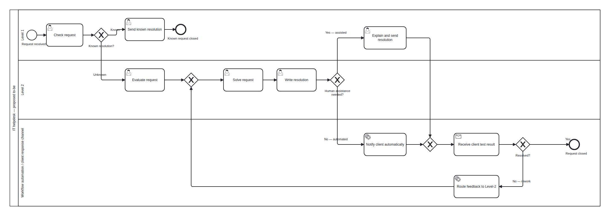
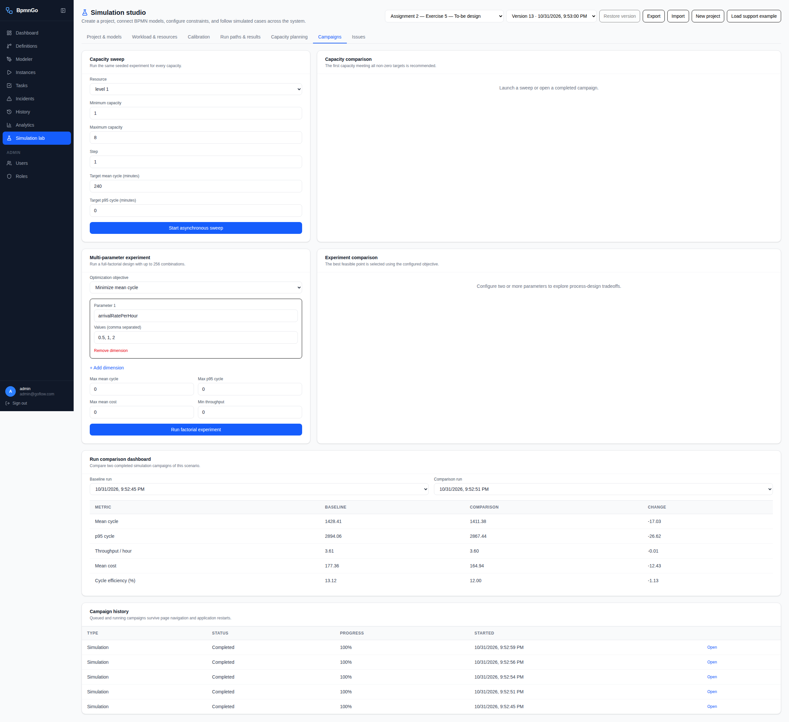

Exercise 5 — A possible to-be helpdesk process
The redesign automates routine resolution delivery and feedback routing while retaining a Level-1 assisted-delivery branch. It preserves diagnosis, client confirmation and the original rework loop.
The completed to-be model
Open the vector diagram to zoom into the labels. The client-response task represents the helpdesk waiting for external feedback; the client's internal testing process is outside the diagram.

Why these changes belong in the model
| Exercise 4 link | Model change | Heuristic and justification |
|---|
| I3 / C3: manual delivery relay | An exclusive gateway selects automated notification or a human-assisted delivery task. | Task elimination and task automation: routine relaying no longer consumes Level-1 work; exceptions retain human explanation. |
| I3 / C3 and I6 / C6: feedback routing | A receive task feeds the solved/rework decision; failed feedback routes automatically back to Level-2. | Task automation and integration: feedback enters the workflow directly instead of requiring Level-1 to forward it manually. |
| I2 / C2: pickup delay | Automated routing is explicit in the process. | Supports prompt dispatch. No extra reduction in fixed internal waits is claimed, since Exercise 3 already set them to zero. |
Heuristic terminology follows Reijers and Limam Mansar (2005); the selection and helpdesk-specific design are this worked example's analysis.
This is a subset of the Exercise 4 proposals. Increased first-level resolution, extra quality checks and shorter client-response times are not assumed. Staffing changes are analyzed separately from the process change.
How it was completed in BpmnGo
- Establish a comparable baseline. Create a separate project from the Exercise 3 configuration. Use 5 Level-1 and 12 Level-2 staff, 4 arrivals/hour, 720 hours, 20 replications and seed 42. Run the unchanged as-is model first. This isolates redesign effects from additional staff.
- Draw the responsibility lanes. In Project & models → Edit BPMN, use Level 1, Level 2, and Workflow automation / client response channel lanes. The supplied to-be BPMN was constructed with an explicit diagram layout, imported into the BpmnGo modeler, exported, and saved to the project.
- Preserve the diagnostic process. Keep request checking, the known-resolution path, Level-2 evaluation, problem solving and resolution writing. Keep initial escalation at 80% and unsuccessful resolution at 20%.
- Add the assisted-delivery exception. After Write resolution add an exclusive gateway, Human assistance needed? The Yes branch retains a Level-1 user task to explain and send the resolution. The No branch uses an automated notification service task. Merge both branches before receiving feedback.
- Route feedback directly. Keep Receive client test result and the Resolved? gateway. Confirmed successes end the process. Failures pass through Route feedback to Level-2, then return to the existing merge before Solve request. Evaluation is not repeated.
- Save and configure simulation assumptions. Click Save to project. Configure the two automated tasks as Fixed 1 minute, no resource and zero fixed cost. Keep the assisted task Normal(mean 20, SD 5) with one Level-1 employee. Set assisted/automated probabilities to 0.1/0.9, and keep client waiting at 1200 minutes. The full parameter details were saved through the local project API and checked in the UI.
- Run matched comparisons and sensitivity checks. Run the main 90%-automated model at 5/12. Also run it at 5/3, then test 0% and 100% automated delivery at 5/12. Every run uses the same arrival assumptions and 20 replications. Restore the saved project to 5/12 and 90% automation afterward.
- Inspect results and reopen the model. Use Campaigns → Run comparison dashboard to compare the oldest local as-is run with the 90% to-be run. Run identifiers below distinguish the variants. Use Project & models → Edit BPMN to continue editing the saved design.
The service-task symbols describe proposed automation. This model was saved for simulation; it does not deploy or implement an email service, feedback portal or production routing integration.
Explicit assumptions
| Parameter | Main scenario | Basis |
|---|
| Arrivals | 4/hour, Constant Poisson | Exercise 3 workload |
| Horizon / replications / seed | 720 hours / 20 / 42 | Same experiment design as Exercise 3 |
| Staffing | 5 Level-1, 12 Level-2; one person per staffed activity | Same staffing in the matched as-is/to-be comparison |
| Known / unknown | 20% / 80% | Unchanged assignment assumption |
| Solved / rework | 80% / 20% | Unchanged assignment assumption |
| Automated / assisted delivery | 90% / 10% per delivery attempt | New illustrative assumption, tested at 0% and 100% automation |
| Assisted delivery | Normal mean 20 minutes, SD 5; one Level-1 staff member | Original post-writing communication task retained for exceptions |
| Automated notification and feedback routing | Each 1 minute; no staff resource; incremental modeled cost €0 | Proposed simulation values; implementation and operating costs are unestimated |
| Client response | 1200-minute unresourced wait | Original 20-hour delay retained |
The assistance flag is treated as available from the case context, with no extra manual assessment task. Its probability is independently sampled at each delivery visit. If assessing the flag requires work or exceptions persist across retries, refine the model before using it operationally.
The first known-resolution response is still handled by Level-1. The notification change applies only after Level-2 has written a resolution.
Measured comparison at equal staffing
Labor cost/case: €177.36 → €164.94 (7.0% lower in the run).
Mean cycle: 23.81 → 23.52 hours, a measured difference of 17.0 minutes. Approximate 95% confidence intervals for the mean are 23.68–23.93 h and 23.34–23.71 h; they overlap. A separate uncertainty analysis of the difference is needed before asserting a statistically reliable cycle-time improvement.
With unchanged probabilities, a simple expected labor check gives about €164.67 per case for the 90%-automated design: Level-2 work remains 156 minutes (€156); Level-1 work is 10 + 0.2 × 5 + 0.1 × 20 = 13 minutes (€8.67). Stochastic runs and nonnegative-normal sampling explain small deviations from that reference.
The result is processing labor cost, not total cost of ownership. It excludes idle payroll, development and ongoing platform expenditure. The hourly staffing budget remains €920 for both 5/12 scenarios, so automation does not itself create a payroll saving in this comparison.
Sensitivity and capacity checks
The 0% automation variant still has automatic failed-feedback routing; it is not identical to the original as-is model. All other task durations, demand assumptions and original branch probabilities are held constant.
The 5/3 to-be mean cycle remains approximately 1054 hours. Level-2 work is unchanged at about 10.4 staff-hours per incoming hour, so a three-person Level-2 pool is still overloaded. Compare this with the Exercise 3 as-is baseline of 1063.69 hours; small differences between overloaded finite-horizon runs should not be treated as a sustainable service improvement.
The 20-hour client-response delay remains the main elapsed-time component once capacity is sufficient. This explains why the labor reduction is larger proportionally than the mean-cycle change.
Interpretation for the assignment
The proposed process removes routine Level-1 forwarding of a prepared resolution and automates return routing after failed client testing. A separate assisted-delivery branch preserves human explanation where required. This applies task elimination, task automation and feedback integration to the issues identified in Exercise 4.
The simulation supports a reduction in modeled processing labor under the stated automation assumptions. It also shows that this redesign alone cannot solve the Level-2 capacity shortage. Selecting a final staffing plan and committing to automation would require a service target, an implementation-cost estimate and evidence about the proportion of cases that can use automatic delivery.
Reopen and inspect
Open the saved project and choose Project & models → Edit BPMN to inspect or change the diagram. The final saved configuration uses 5/12 staffing and 90% automatic delivery. Under Campaigns, all five completed runs retain their individual configuration snapshots.
| Run | ID |
|---|
| As-is, 5/12, original relay | ffedf848-77ba-4f23-b652-567361d7c0bc |
| To-be, 5/12, 90% automated | fde64022-6858-4f8a-967a-77b5d7b575b6 |
| To-be, 5/3, 90% automated | f178cc17-0010-483d-82ac-73489f7aac3f |
| To-be, 5/12, 0% automated | dec6ae0d-01d6-49f1-a9cd-a76407d7123f |
| To-be, 5/12, 100% automated | ac327f03-8e89-4b02-afd3-54533f17c93e |
The earliest local run is the unchanged as-is model at 5/12. The next is the main 90%-automated comparison; the remaining runs are sensitivity checks. Select the first two in Run comparison dashboard.
Screenshot of the comparison dashboard

The original Exercise 3 project, its runs and Exercise 4 issue register were verified unchanged. The Exercise 4 proposals remain open because this is a tested design proposal, not a production rollout.
Validation and limits
The BPMN imported and round-tripped through BpmnGo's modeler. Sequence-flow references, the assisted/automated split, final saved resource counts and retained client delay were checked. All five simulations completed; admitted and completed case counts matched. The as-is 5/12 result reproduced Exercise 3's result.
Results use a finite arrival horizon followed by full backlog drain. Throughput and utilization include that drain period. The p95 values average per-replication percentiles; confidence intervals use BpmnGo's normal approximation. Equal seeds do not guarantee identical case paths across designs because event order and random-draw consumption change. No reduction in the original failure probability, fixed client delay or initial escalation rate was introduced.
Artifacts: complete comparison data, BPMN exported by the modeler, vector diagram, portable scenario.